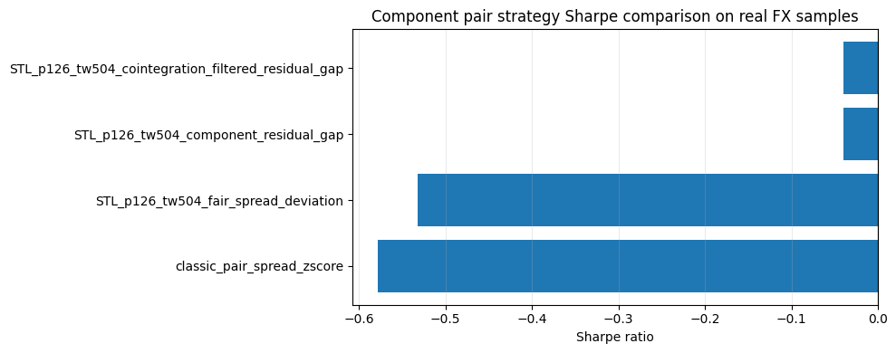

Strategy Expansion 04 - Component pair trading and cointegration
Executed tutorial notebook. This page is generated from
examples/notebooks/quant_trading/04_detime_component_pair_trading_cointegration.ipynb and includes markdown cells, code cells, stdout, tables, and captured figures from the committed notebook.
Tutorial Navigation
| Track | Tutorial notebook |
|---|---|
| Roadmap | Tutorial 00 - Roadmap |
| Strategy Lab | 01 Trend-Following Lab |
| Tutorial Sequence | 01 Real Market Data and Feature Factory |
| Tutorial Sequence | 02 Decomposition-aware MA and MACD |
| Strategy Lab | 02 Oscillation-Reversion Lab |
| Strategy Expansion | 03 Method-Specific Variants |
| Tutorial Sequence | 03 Residual Mean Reversion |
| Strategy Expansion | 04 Component Pair Trading |
| Tutorial Sequence | 04 Donchian Breakout |
| Tutorial Sequence | 05 Pair-Spread Stat-Arb |
| Tutorial Sequence | 06 Cross-Sectional Rotation |
| Native SSA Replay | 07 Native SSA High-Return / Low-Drawdown |
Executed Notebook
This notebook turns pair trading into component relationship trading. A pair is interesting when its trend and cycle components are similar enough, while the residual gap creates the temporary tradable deviation.
Component pair hypothesis
For assets A and B, the decomposition-first pair hypothesis is:
trend_A ≈ beta * trend_B
cycle_A ≈ beta * cycle_B
residual_A - beta * residual_B is the tradable gap
The notebook also reports Engle-Granger and ADF diagnostics for cointegration and spread stationarity.
In [1]
import matplotlib.pyplot as plt
from quant_trading.data import load_bundled_real_ohlcv_panel, ohlcv_panel_to_field
from quant_trading.strategy_component_pairs import (
ComponentPairConfig,
collect_pair_orders_and_trades,
run_component_pair_suite,
)
In [2]
pairs = [('AUDUSD=X', 'NZDUSD=X'), ('EURUSD=X', 'GBPUSD=X'), ('CADUSD=X', 'CHFUSD=X')]
assets = sorted({x for pair in pairs for x in pair})
panel = load_bundled_real_ohlcv_panel(assets, min_observations=180)
close = ohlcv_panel_to_field(panel, 'Close')
volume = ohlcv_panel_to_field(panel, 'Volume')
execution_prices = ohlcv_panel_to_field(panel, 'Open').shift(-1).reindex_like(close).ffill()
close.tail()
text/html
| AUDUSD=X | CADUSD=X | CHFUSD=X | EURUSD=X | GBPUSD=X | NZDUSD=X | |
|---|---|---|---|---|---|---|
| Date | ||||||
| 2017-12-27 | 0.773043 | 0.788208 | 1.010407 | 1.185789 | 1.337471 | 0.703250 |
| 2017-12-28 | 0.777484 | 0.790533 | 1.014405 | 1.190079 | 1.340393 | 0.706969 |
| 2017-12-29 | 0.779429 | 0.795830 | 1.021764 | 1.194172 | 1.344086 | 0.709341 |
| 2018-01-01 | 0.780214 | 0.794862 | 1.026979 | 1.200495 | 1.351607 | 0.711389 |
| 2018-01-02 | 0.780104 | 0.796495 | 1.025936 | 1.201158 | 1.351132 | 0.708818 |
In [3]
config = ComponentPairConfig(
method='STL',
period=126,
train_window=504,
step=21,
z_window=63,
require_cointegration=False,
)
stats, results, diagnostics, feature_snapshot = run_component_pair_suite(
close,
pairs,
volumes=volume,
config=config,
execution_prices=execution_prices,
)
stats
text/html
| strategy | strategy_family | total_return | cagr | sharpe | max_drawdown | calmar | volatility | hit_rate | trade_win_rate | ... | config_entry_z | config_exit_z | config_min_trend_corr | config_min_cycle_corr | config_max_fair_spread_trend_abs | config_max_cointegration_pvalue | config_require_cointegration | config_allow_short | config_max_gross | config_name | |
|---|---|---|---|---|---|---|---|---|---|---|---|---|---|---|---|---|---|---|---|---|---|
| 1 | detime_STL_p126_tw504_component_residual_gap | component_residual_gap | -0.005429 | -0.001314 | -0.039448 | -0.040129 | -0.032754 | 0.025256 | 0.162033 | 0.468750 | ... | 1.5 | 0.25 | 0.5 | 0.25 | 0.0025 | 0.1 | False | True | 1.0 | STL_p126_tw504 |
| 3 | detime_STL_p126_tw504_cointegration_filtered_r... | cointegration_filtered_residual_gap | -0.005429 | -0.001314 | -0.039448 | -0.040129 | -0.032754 | 0.025256 | 0.162033 | 0.468750 | ... | 1.5 | 0.25 | 0.5 | 0.25 | 0.0025 | 0.1 | False | True | 1.0 | STL_p126_tw504 |
| 2 | detime_STL_p126_tw504_fair_spread_deviation | fair_spread_deviation | -0.054478 | -0.013443 | -0.532199 | -0.066059 | -0.203509 | 0.024851 | 0.168744 | 0.534091 | ... | 1.5 | 0.25 | 0.5 | 0.25 | 0.0025 | 0.1 | False | True | 1.0 | STL_p126_tw504 |
| 0 | classic_pair_spread_zscore | classic_pair_spread_zscore | -0.090993 | -0.022787 | -0.578682 | -0.136457 | -0.166987 | 0.038546 | 0.477469 | 0.568966 | ... | 1.5 | 0.25 | 0.5 | 0.25 | 0.0025 | 0.1 | False | True | 1.0 | STL_p126_tw504 |
4 rows × 37 columns
In [4]
plot_stats = stats.sort_values("sharpe", ascending=True).copy()
labels = plot_stats["strategy"].astype(str).str.replace("detime_", "", regex=False)
fig, ax = plt.subplots(figsize=(10, 4))
ax.barh(labels, plot_stats["sharpe"])
ax.axvline(0, color="black", linewidth=0.8)
ax.set_xlabel("Sharpe ratio")
ax.set_title("Component pair strategy Sharpe comparison on real FX samples")
ax.grid(True, axis="x", alpha=0.25)
plt.tight_layout()
plt.show()
image/png

Read the diagnostics
latest_trend_corrmeasures whether the two decomposed trends are currently similar.latest_cycle_corrmeasures whether their cycles are currently aligned.raw_price_coint_pvalueis the Engle-Granger test p-value on log prices.fair_value_coint_pvalueapplies the same idea to trend + cycle fair values.raw_spread_adf_pvalue,fair_spread_adf_pvalue, andresidual_gap_adf_pvaluetest whether the relevant spread is stationary enough for a mean-reversion hypothesis.
In [5]
diagnostics
text/html
| pair | method_variant | date | latest_beta | latest_return_corr | latest_trend_corr | latest_cycle_corr | latest_residual_corr | latest_raw_spread | latest_fair_spread | ... | fair_spread_adf_valid | fair_spread_adf_reason | residual_gap_adf_test | residual_gap_adf_statistic | residual_gap_adf_pvalue | residual_gap_adf_critical_1pct | residual_gap_adf_critical_5pct | residual_gap_adf_critical_10pct | residual_gap_adf_valid | residual_gap_adf_reason | |
|---|---|---|---|---|---|---|---|---|---|---|---|---|---|---|---|---|---|---|---|---|---|
| 0 | AUDUSD=X/NZDUSD=X | STL_p126_tw504 | 2018-01-02 | 0.509809 | 0.632244 | 0.781036 | 0.893991 | 0.868270 | -0.072874 | -0.089448 | ... | True | adf | -3.870877 | 0.002260 | -3.436641 | -2.864318 | -2.568249 | True | ||
| 1 | EURUSD=X/GBPUSD=X | STL_p126_tw504 | 2018-01-02 | 0.406596 | 0.446730 | 0.959134 | 0.710493 | 0.414906 | 0.060924 | 0.052337 | ... | True | adf | -2.719558 | 0.070715 | -3.436771 | -2.864375 | -2.568279 | True | ||
| 2 | CADUSD=X/CHFUSD=X | STL_p126_tw504 | 2018-01-02 | 0.422316 | 0.403466 | 0.505531 | 0.755836 | 0.524348 | -0.238348 | -0.248651 | ... | True | adf | -3.022754 | 0.032823 | -3.436641 | -2.864318 | -2.568249 | True |
3 rows × 54 columns
In [6]
orders, trades = collect_pair_orders_and_trades(results)
print('orders:', len(orders))
print('round-trip trades:', len(trades))
trades.head()
stdout
orders: 7332
round-trip trades: 210
text/html
| strategy | asset | side | entry_signal_date | entry_fill_date | exit_signal_date | exit_fill_date | entry_price | exit_price | bars_held | entry_weight | directional_return | approx_weighted_return_after_cost | |
|---|---|---|---|---|---|---|---|---|---|---|---|---|---|
| 0 | classic_pair_spread_zscore | AUDUSD=X | long | 2014-03-13 | 2014-03-14 | 2014-08-28 | 2014-08-29 | 0.903016 | 0.935016 | 120 | 0.166667 | 0.035437 | 0.005789 |
| 1 | classic_pair_spread_zscore | AUDUSD=X | long | 2014-09-10 | 2014-09-11 | 2015-04-29 | 2015-04-30 | 0.915667 | 0.799488 | 165 | 0.316258 | -0.126879 | -0.040348 |
| 2 | classic_pair_spread_zscore | AUDUSD=X | short | 2015-05-14 | 2015-05-15 | 2015-07-28 | 2015-07-29 | 0.808473 | 0.734808 | 53 | -0.296715 | 0.091116 | 0.026828 |
| 3 | classic_pair_spread_zscore | AUDUSD=X | long | 2015-09-04 | 2015-09-07 | 2015-12-03 | 2015-12-04 | 0.693577 | 0.733192 | 64 | 0.205421 | 0.057117 | 0.011589 |
| 4 | classic_pair_spread_zscore | AUDUSD=X | short | 2016-02-09 | 2016-02-10 | 2016-05-19 | 2016-05-20 | 0.706614 | 0.723223 | 72 | -0.194131 | -0.023505 | -0.004699 |
Strategy variants
The suite compares a classical raw spread z-score baseline with three decomposition-first variants:
component_residual_gap: trades residual_z differences when trend and cycle are similar;fair_spread_deviation: trades price spread deviation from the decomposed trend+cycle relationship;cointegration_filtered_residual_gap: requires cointegration/stationarity diagnostics before trading residual gaps.